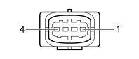

K018 LAMBDA SENSOR ON CATALYZER - 2 (ENGINE)
- Path
- Electrical equipment > 3 CONNECTORS > K SENSORS AND SENDER UNITS > K018 LAMBDA SENSOR ON CATALYZER - 2 > K018 LAMBDA SENSOR ON CATALYZER - 2 (ENGINE)
- Kind
- connector pinout (pin -> wire colour -> other end)
- Applies to
- engines: 1.8; all production periods
- Interactive page
- https://sloeber94.github.io/elrnDB-fCrm/en/#/194005123
Applies to: engines: 1.8; all production periods

Wiring | Colour |
|---|---|
_ |
Pin | Cable | Destination | |||
|---|---|---|---|---|---|
Sec.. | Colour | Node | Connect. | Pin | |
1 | 0,5 | GV (yellow with green stripe) | 19 | ||
2 | 0,5 | CA (orange with light blue stripe) | 54 | ||
3 | 0,75 | AN (light blue with black stripe) | X | 8 | |
3 | |||||
4 | |||||
1 | |||||
2 | |||||
2 | |||||
2 | |||||
2 | |||||
4 | 0,5 | SN (pink with black stripe) | 29 | ||
Topics linked from this page (10)
- 50 ENGINE
- D029 ENGINE CABLES/ENGINE SERVICES CABLE COUPLING
- K017 LAMBDA SENSOR ON CATALYZER
- K041 AIR FLOW METER
- L010 FUEL VAPOUR RECOVERY SOLENOID VALVE
- L015 VARIABLE GEOMETRY SOLENOID VALVE
- M010B ENGINE MANAGEMENT CONTROL UNIT (ENGINE)
- N086 ELECTRONIC THERMOSTAT
- N092 PHASE SHIFTER SOLENOID VALVE ON INTAKE SIDE
- N093 PHASE SHIFTER SOLENOID VALVE ON EXHAUST SIDE